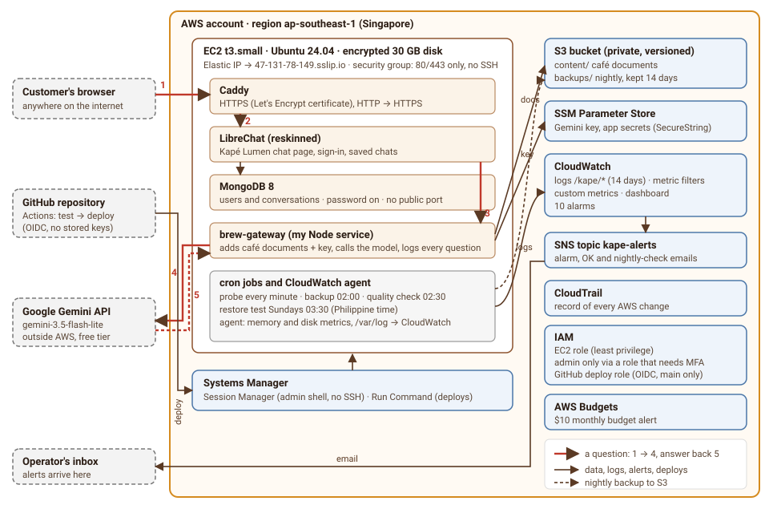

AWS infrastructure design
Everything runs in one AWS account in one region (Singapore, the closest to the Philippines), on one server. That is deliberate: it is a small café assistant, and one well-run server is easier to secure, monitor and afford than a cluster.

How a question travels
- Browser → Caddy. The customer types a question at
https://47-131-78-149.sslip.io. The name points at the server's fixed (Elastic) IP address. Caddy holds the HTTPS certificate, decrypts the request and passes it on. - Caddy → LibreChat. LibreChat checks the user is signed in, saves the message in MongoDB, and sends the conversation to its only "model": brew-gateway.
- LibreChat → brew-gateway. The gateway puts the five café documents (read from S3 and refreshed every 5 minutes) in front of the conversation as instructions, and adds the Gemini key (read from Parameter Store, never written to disk).
- brew-gateway → Gemini. The request leaves AWS for Google's API. This is the only place data leaves the account: the café documents and the question, both free of personal data.
- Answer back. The answer streams back through the gateway, LibreChat and Caddy to the browser. The gateway writes one log line: the question, how long it took, whether it worked, and which gateway, content and model version answered. That line goes to CloudWatch, where it is counted for the dashboard and alarms.
Every service and what it is for
| Service | Used for | Why this one |
|---|---|---|
| EC2 (t3.small) | Runs all four containers and the scheduled jobs | Measured memory use was about 550 MB locally; 2 GB leaves room for MongoDB and a restore test. Smaller (t3.micro, 1 GB) would swap; larger would be wasted money. |
| EBS (30 GB gp3, encrypted) | The server's disk: database, uploads, local backups | Encrypted at rest at no extra cost; disk usage is alarmed at 80%. |
| Elastic IP | A fixed public address, and through sslip.io a name for the HTTPS certificate | The address survives a stop and start; a free sslip.io name avoids buying a domain. |
| Security group | The server's firewall | Only ports 80 and 443 are open. No SSH: admin access is through Session Manager. |
| S3 | Café documents (content/) and nightly database backups (backups/) | Cheap, durable and versioned: a deleted or overwritten document can be brought back, and staff could update content without touching the server. |
| SSM Parameter Store | The Gemini key and the app's secrets (SecureString) | Encrypted, access-controlled and free; the app reads keys at runtime, so no key is in the code, the image or the repository. |
| Systems Manager | Session Manager (admin shell) and Run Command (deploys) | Lets me and GitHub reach the server without opening SSH or holding SSH keys; access is controlled by IAM and recorded by CloudTrail. |
| CloudWatch | Logs (14-day retention), metrics, dashboard, 10 alarms | Built in; container logs go there directly through Docker's awslogs driver, and the agent adds memory and disk. |
| SNS | Alarm emails and the nightly quality-check email | One topic, one confirmed email subscription; every alarm uses it. |
| CloudTrail | Record of every AWS API call | So I can see who changed what, and when; the first place to look after an unexpected change. |
| IAM | The server's role, my admin role, the GitHub deploy role | Each has only the permissions it needs; admin needs MFA; GitHub signs in with short-lived OIDC tokens instead of stored keys. |
| AWS Budgets | $10 monthly budget alert | Set up before anything else, so a mistake cannot run up a bill unnoticed. |
Outside AWS
- Google Gemini API (
gemini-3.5-flash-lite, free tier): the model. The course does not require an AWS AI service, and the free tier costs nothing at this scale. - GitHub: the code repository, GitHub Actions (tests and deploys) and GitHub Pages (this website).
- sslip.io: free DNS that turns
47-131-78-149.sslip.iointo the address 47.131.78.149, so Let's Encrypt can issue a certificate.
What is deliberately not here
No load balancer, no second server, no managed database (RDS) and no Kubernetes. Each would add cost and moving parts, and the course limits the project to one region and a small footprint. The trade-off is that the single server is a single point of failure; the Well-Architected review names that as the gap I would close first.